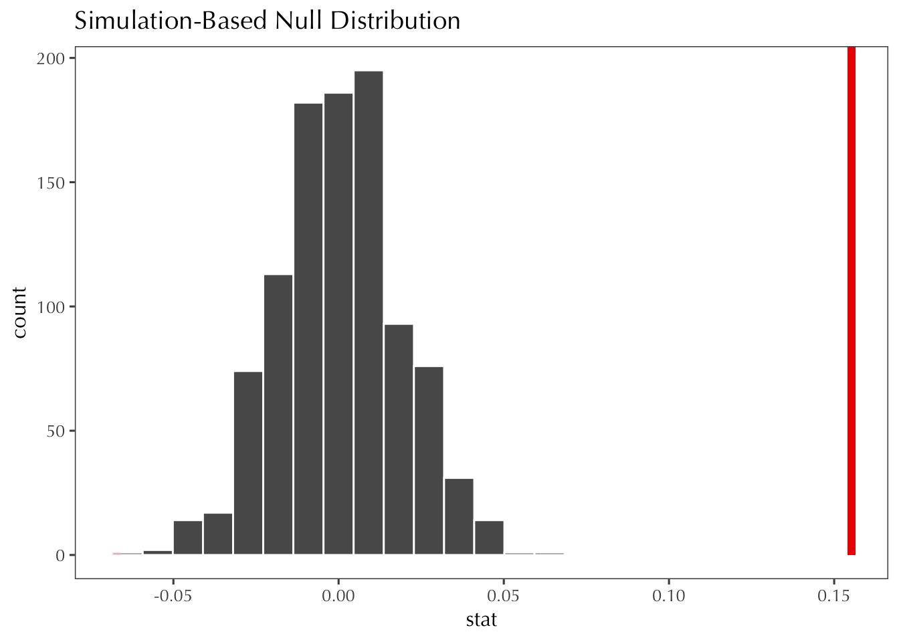

── Attaching core tidyverse packages ──────────────────────── tidyverse 2.0.0 ──
✔ dplyr 1.1.3 ✔ readr 2.1.4
✔ forcats 1.0.0 ✔ stringr 1.5.0
✔ ggplot2 3.4.3 ✔ tibble 3.2.1
✔ lubridate 1.9.2 ✔ tidyr 1.3.0
✔ purrr 1.0.2
── Conflicts ────────────────────────────────────────── tidyverse_conflicts() ──
✖ dplyr::filter() masks stats::filter()
✖ dplyr::lag() masks stats::lag()
ℹ Use the conflicted package (<http://conflicted.r-lib.org/>) to force all conflicts to become errors
library(infer)library(janitor) ## for convenient "table" functions
Attaching package: 'janitor'
The following objects are masked from 'package:stats':
chisq.test, fisher.test
library(gssr) ## for access to GSS data
Package loaded. To attach the GSS data, type data(gss_all) at the console.
For the codebook, type data(gss_doc).
For the panel data and documentation, type e.g. data(gss_panel08_long) and data(gss_panel_doc).
Looks like we need 100 people minimum to have a standard error less than 5%.
6.1.5
What’s the probability of observing the true p = 0.53 value under the null (p = 0.5)?
S <-1e7## number of simulated drawspoll_size <-1000## sample sizedraws <-rbinom(S, size = poll_size, prob =0.50)null <- draws / poll_sizesum(null ==0.53) /length(null)
[1] 0.0041995
Based on this analysis, the probability is ~0.417%
What’s the probability of observing prop_hat under the null? Is this significant at alpha=.05?
prophats <-tibble( # simulate 1000 phats under p=0.5id =1:1000,) |>rowwise() |>mutate(p_hat=mean(rbinom(poll_size, size =1, prob =0.5)))sum(prophats$p_hat ==0.53) /length(prophats$p_hat) # find the probability of seeing the real p-hat
[1] 0.002
looks like the probability of observing prop_hat is ~ the same as the probability of observing the true value. It is significant at alpha = .05 because prop_hat is < .05.
6.1.7
Verify that the formulaic standard error of a difference in proportions equals sd().
# create null distributionnull_dist <- d_cons |>specify(weekly ~ conservative_fct) |>hypothesize(null ="independence") |>generate(reps =1000, type ="permute") |>calculate(stat ="diff in means", order =c("Non-Conservative","Conservative")) null_dist |>get_p_value(obs_diff, direction ="both")
Warning: Please be cautious in reporting a p-value of 0. This result is an
approximation based on the number of `reps` chosen in the `generate()` step.
See `?get_p_value()` for more information.
# A tibble: 1 × 1
p_value
<dbl>
1 0
null_dist |>visualize() +shade_p_value(obs_diff, direction ="both")

Based on the hypothesis test, the difference in proportions here is statistically significant.
6.2.4
From the tile tables, we notice a few things.
The first graph is raw counts of each polview / attend pair in the responses. Here, we see that the most common type of individual surveyed was a political moderate who never goes to church.
The second graph is percentages representing the attend variable for each polview. In the middle graph, we can see that liberals are generally more likely never to go to church, and conservatives are generally more likely. Not many people of any political walk are likely to go more than once.
In the third graph is percentages representing the polview variable for each attend level. Here, we can see that people are generally moderate, but if they tend to never go to church they are more likely to be strong liberals, and if they tend to go to church a lot, they tend to be stronger conservative.
6.2.5
d |>mutate(polviews =as_factor(polviews), attend =as_factor(attend)) |>specify(response = polviews, explanatory = attend) |>hypothesize(null ="independence") |>generate(reps =1000, type ="permute") |>calculate(stat ="Chisq")